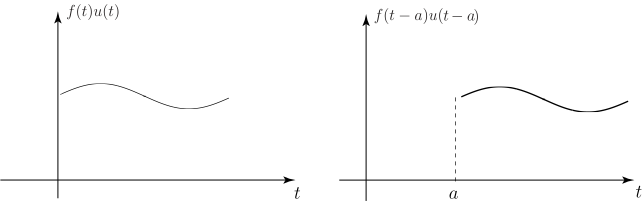

Long description: figout3_3

Alt text: The image displays two graphs illustrating the time-shifting property of the Fourier transform: the left graph shows \(f(t)u(t)\) and the right graph shows \(f(t-a)u(t-a)\).
This description was generated by AI and has not been verified by a human. If you spot an error, please use the feedback link below.
- The image contains two graphs side-by-side, both depicting a function plotted against a horizontal axis labeled \(t\).
- The graph on the left is titled with the function \(f(t)u(t)\), where \(u(t)\) is the unit step function.
- The function displayed in the left graph is a smooth, wave-like curve that starts at the origin and remains visible for positive values of \(t\).
- The graph on the right is titled with the function \(f(t-a)u(t-a)\).
- The function displayed in the right graph is the same smooth, wave-like curve as the left graph, but it has been shifted horizontally to the right by an amount \(a\).
- A dashed vertical line is drawn on the right graph at the position \(t=a\), corresponding to the shift in the function \(f(t-a)u(t-a)\).